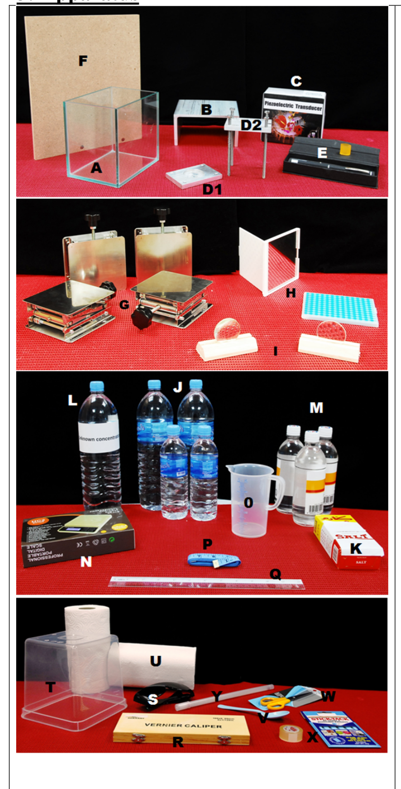
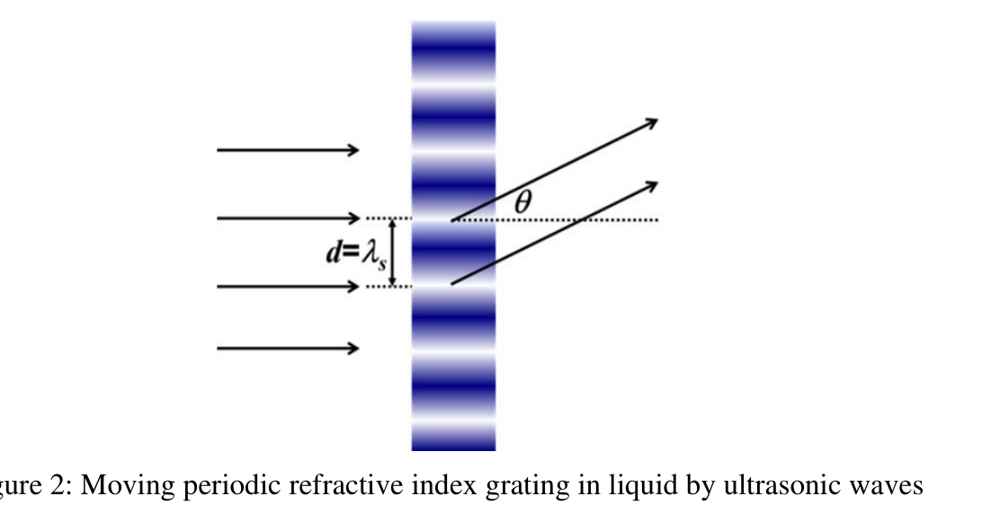
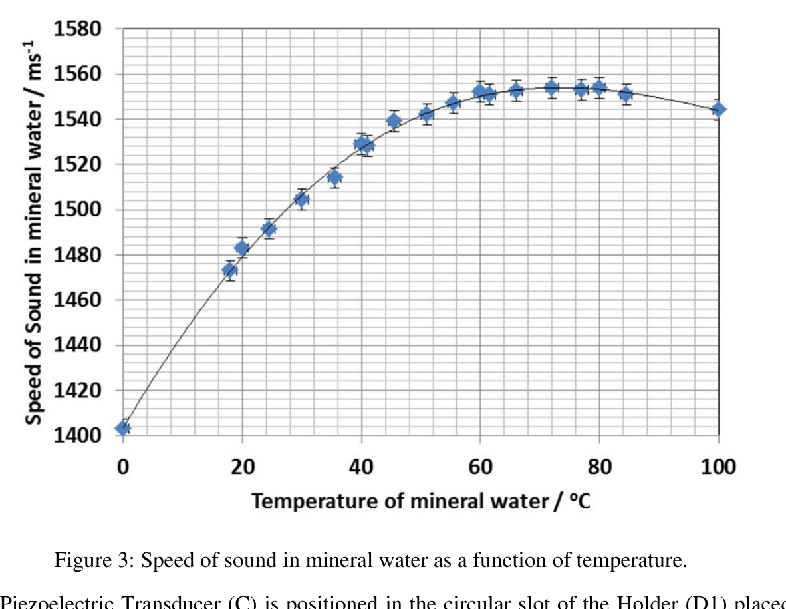
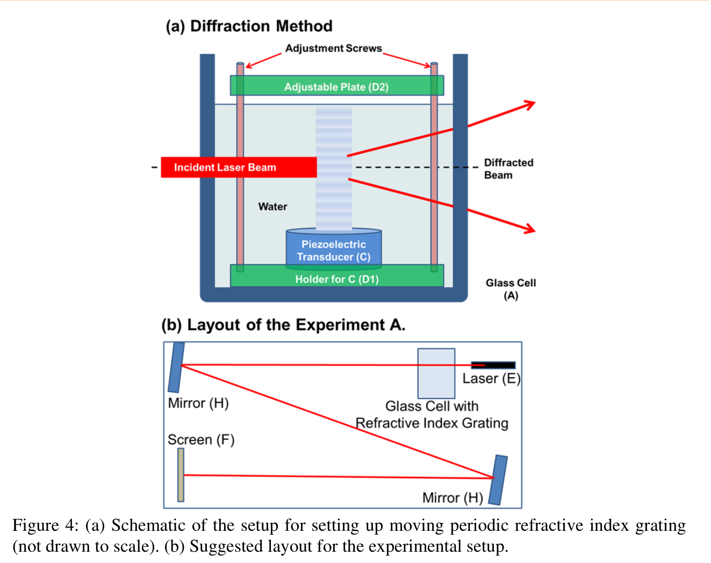
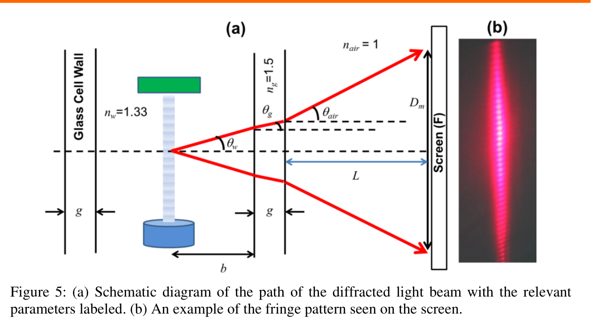
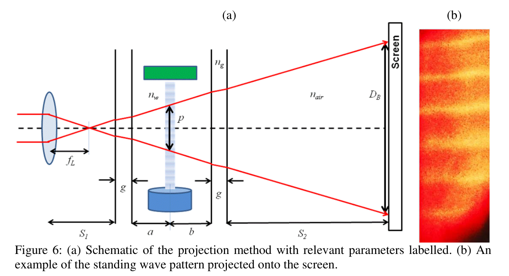

Speed of Ultrasonic Sound in Solution
1. Introduction
Ultrasonic sound waves have many applications in industry, for non-destructive testing, sonar, medical imaging, etc. The acousto-optic effect is extensively used in the study of ultrasonic waves. Acousto-optic devices are now utilized in modulation, signal processing and frequency shifting of light beams. With the availability of lasers, the acousto-optic effect can be readily observed. In addition, development of high frequency piezoelectric transducers can be utilized to generate acousto-optic effects.
In this APhO2014 experiment, we shall embark on a journey to probe the properties of sound travel in selected solutions:
- (i) using the acousto-optic effect in the Raman-Nath diffraction regime, and
- (ii) by direct visualization of the standing waves.
In addition, we shall also learn that very interesting experiments can be performed by making use of simple and economical items that are easily available.
2. Safety Precautions and General Advice
- Do not stare into the laser beam directly.
- The Piezoelectric Transducer should be switched ON only after being securely placed inside the water in the glass cell.
- Do not dip your hand into the water filled glass cell if the Piezoelectric Transducer is switched ON.
- Be careful not to spill the water, especially onto the electrical power socket.
- Handle the glass container and the lab-jacks safely.
- Do not drink/consume any of the materials provided for the experiment.
- Wear the laser safety goggles whenever the laser is ON.
- Switch off the laser pointer when it is not in use to avoid unnecessary draining of battery.
- Switch off the piezoelectric transducer if it is not in use to avoid the heating of water. The speed of sound in water changes with temperature.
- You are provided with a plastic folder to keep your question paper and answer sheets to protect the papers from water.
- As there is limited space on the working table, store unused equipment in the box and keep that on the floor.
- You are provided with three Glass Cells and you can use a new one when moving from experiment to the next.
3. Apparatus
You are provided with the following components:
| Label | Item |
|---|---|
| (A) | Glass Cell for liquids × 3 – for experiments |
| (B) | Aluminium platform for (A) – optional |
| (C) | Piezoelectric Transducer |
| (D1) | Holder for (C) |
| (D2) | Adjustable Plate – to be mounted on D1 |
| (E) | Laser Pointer with plastic jacket to keep laser ON |
| (F) | Screen Board for mounting Answer Sheets (or Additional Writing Sheets) to mark fringes/patterns |
| (G) | Lab Jacks × 4 – for mounting laser pointer and optical components |
| (H) | Mirror × 2 |
| (I) | Lens × 2 (focal lengths 5.0 cm and 15.0 cm) |
| (J) | Mineral Water 1.5 L × 2 & 0.5 L × 2 |
| (K) | Salt (500 g) |
| (L) | Bottle of solution with unknown concentration of salt in mineral water for Experiment C |
| (M) | Light Corn Syrup 0.5 L × 3 |
| (N) | Digital Scale |
| (O) | Measuring Container for water |
| (P) | Measuring Tape |
| (Q) | Ruler |
| (R) | Vernier Caliper |
| (S) | Safety Eyewear – laser goggles |
| (T) | 4 L Plastic container – for water disposal |
| (U) | Tissue Roll × 2 |
| (V) | Spoon |
| (W) | Scissors |
| (X) | Scotch tape and Stick-Tack |
| (Y) | Thermometer inside a plastic case |
Figure 1

Images of the apparatus and components required for this experiment problem.
Experiment A — Measurement of the Frequency of Ultrasonic Waves using the Diffraction Method
When sound waves are travelling in a medium, it gives rise to pressure fluctuations resulting in the variation in the refractive index of the medium. Under the appropriate conditions, sound waves produce a moving periodic refractive index grating in the materials and this grating can be detected optically. This is known as acousto-optic effect. Debye and Sears, in 1932, were one of the first to demonstrate the diffraction of light by this moving periodic refractive index grating. Detailed theoretical treatment was formulated by Raman and Nath in 1935.
Figure 2

Moving periodic refractive index grating in liquid by ultrasonic waves.
As shown in Figure 2, a light beam is diffracted by the moving periodic refractive index grating. The diffracted light follows the grating equation
where is the grating element, is the diffraction angle, is the order of diffraction, and is the wavelength of the light in the medium.
According to Raman and Nath, the grating element is equal to the wavelength, , of the ultrasonic wave in the medium as shown in Figure 2.
In this experiment, the diffraction method will be employed to measure the frequency of the ultrasonic waves generated by a Piezoelectric Transducer (C) using the known value of speed of the sound in mineral water. Figure 3 shows the speed of sound in mineral water as a function of temperature.
Figure 3

Speed of sound in mineral water as a function of temperature.
The Piezoelectric Transducer (C) is positioned in the circular slot of the Holder (D1) placed in the Glass Cell (A) filled with 1.5 L of mineral water. Upon switching on the transducer, a vertical moving periodic refractive index grating is established in water as shown in Figure 4(a). For experiment A, please ensure that the Plate (D2) is positioned above the water level as it is only used to avoid splashing. A laser beam incident perpendicular to the grating results in the formation of the diffraction fringes. At sufficiently large distance from the grating, clearly distinguishable fringes can be formed on the screen (F) for measurement and analysis, as described in Figure 4(b).
Figure 4

(a) Schematic of the setup for setting up moving periodic refractive index grating (not drawn to scale). (b) Suggested layout for the experimental setup.
The calculation of the frequency of ultrasonic waves generated by the Piezoelectric Transducer in mineral water requires the determination of the wavelength of sound in water, , first. Using equation (1) and Figure 5, which shows all relevant parameters, answer Question A1.
A1. (1.5)
An expression for is given in equation (2) under the small-angle approximation.
Derive an expression for in terms of , , , , , and . Here
- is the wavelength of the ultrasonic wave in water,
- is the distance from the center of the grating to the inner wall of the glass cell,
- is the thickness of the wall of the glass cell,
- is the total number of diffraction fringes counted on screen,
- , and are the refractive indices of water, glass and air, respectively,
- is the distance from the wall of the glass container to screen,
- is the wavelength of laser light in air, and
- is the spread of diffraction fringes on the screen.
Figure 5

(a) Schematic diagram of the path of the diffracted light beam with the relevant parameters labeled. (b) An example of the fringe pattern seen on the screen.
Now set up the experiment taking hints from the schematics shown in Figure 4 and 5. Do put in effort to generate as many fringes as you can. For this part you are required to mount Answer Sheet A2 on the Screen (F) to record the diffraction fringes. As the laser beam profile may not be perfectly symmetric, you should rotate the laser to get the best possible fringes. Keep your work neat and clean. Since the speed of sound in water depends on the temperature of the water, the temperature should be monitored during the experiment. You are provided with a plastic folder to keep your question paper and answer sheets to protect the papers from water spillage.
A2. (2.5)
Mark all fringe patterns you measure on the Answer Sheet A2. Write clearly the number of fringes counted, , and the spread of the fringes. Note down the temperature of the mineral water.
Do not forget to note down the relevant experimental parameters, in Answer Sheet A3 as well, needed for calculations.
Note
Whenever you have completed the marking of the fringes, please switch off the Piezoelectric Transducer (C) and the Laser Pointer (E) while you are working on data analysis and calculations.
For the following questions you may use:
- = refractive index of water =
- = refractive index of air =
- = refractive index of glass =
- = the wavelength of laser light in air = nm
- Figure 3 to determine the speed of sound in mineral water.
Note
For your error analysis, to simplify your calculation, you may neglect the uncertainties in , , and .
A3. (1.0)
Measure and record all relevant parameters in Answer Sheet A3 and calculate the wavelength of sound, , in mineral water.
A4. (0.5)
Calculate and record the frequency of ultrasonic waves, , in mineral water.
A5. (1.0)
Carry out an error analysis to estimate the uncertainty in .
Experiment B — Measurement of the Frequency of the Ultrasonic Waves using the Projection Method
In Experiment B a different method, called Projection Method, will be used to measure the frequency of ultrasonic waves in mineral water by direct visualization. To do this a standing wave pattern is set up in mineral water by using the Adjustable Plate (D2) as ultrasonic wave reflector. The superposition of the travelling waves, from the piezoelectric transducer and the adjustable reflector plate, moving in opposite directions generates a standing wave pattern. Figure 6 shows the schematic of projection method setup. As shown in schematic, a Lens (I) is inserted between the Laser (E) and the wall of the Glass Cell (A). The standing wave pattern in the glass cell is then projected onto the screen with a magnification, .
Figure 6

(a) Schematic of the projection method with relevant parameters labelled. (b) An example of the standing wave pattern projected onto the screen.
The magnification, , of the region on screen (F) in terms of the parameters shown in Figure 6 is given by equation (3)
Here
- is the distance from the center of the lens to the outer wall of the glass cell,
- is the distance from the outer wall of the glass cell to the screen (F),
- is the focal length of the lens,
- is the distance from the center of the grating to the left inner wall of the glass cell,
- is the distance from the center of the grating to the right inner wall of the glass cell,
- is the thickness of the wall of the glass cell,
- is the refractive index of water,
- is the refractive index of glass, and
- is the refractive index of air.
The bright and dark regions in the projected pattern are related to the nodes and antinodes of the standing wave pattern.
B1. (1.0)
Assume that the number of bright regions counted within the length on screen is .
Use equation (3), to write the expression for in terms of measurable and given parameters.
Now set up the experiment taking hints from the schematic shown in Figure 6. For this part you are required to mount Answer Sheet B2 on the Screen (F) to record the projected standing wave pattern.
Some recommendations for the experimental procedure are:
- To obtain a standing ultrasonic wave for the projection method, submerge the adjustable plate (D2) into the water.
- Carefully adjust the leveling screws, to obtain a stable and well defined pattern as shown in Figure 6(b).
- Two lenses of focal lengths 5.0 cm and 15.0 cm are provided. Use only one of these lenses for Experiment B.
B2. (2.0)
Mark the projected standing wave patterns on the Answer Sheet B2. Write clearly the number of bright regions counted, , and the corresponding spread . Note down the temperature of the mineral water.
Do not forget to note down the relevant experimental parameters, in Answer Sheet B3 as well, needed for calculations.
B3. (1.5)
Measure and record all relevant parameters in the Answer Sheet B3 and calculate the wavelength of sound, , in mineral water.
B4. (0.5)
Calculate and record the frequency of ultrasonic waves, , in mineral water.
For your error analysis in the next part, to simplify your calculation, you may neglect the uncertainties in , , and .
B5. (1.0)
Carry out an error analysis to estimate the uncertainty in .
Experiment C — To determine the Salt Concentration of a Solution
In this experiment, you are provided with a bottle (L) labeled as “Unknown Concentration” that contains salt solution with an unknown amount of salt dissolved in mineral water. The aim of Experiment C is to determine the concentration of the salt solution.
The approach in this method is to dissolve increasing and known amounts of salt into 1.5 liters of mineral water in the Glass Cell (A) and subsequently measure the speed of sound in water with the known salt concentration using the frequency of ultrasonic waves determined in Experiment A or B. After dissolving a known amount of salt into the water, measure the speed of sound in the salt solution using ONLY one of the two methods described in Experiment A and Experiment B.
You will need to plot a graph of the speed of sound versus the concentration of the salt solution (where is the mass of salt dissolved in water divided by combined mass of water and salt). This shall be your calibration curve.
Then proceed to measure the speed of sound in solution with an unknown amount of salt dissolved in mineral water (L) labeled as “Unknown Concentration” and use your calibration curve to determine the salt concentration in the unknown solution.
Assume that the refractive index of salt solution changes negligibly as salt is added and its value can still be taken as .
For Experiment C, make ONLY one measurement corresponding to each of the different salt concentrations.
Warning
Remember to switch OFF the Piezoelectric Transducer and the Laser Pointer when they are not in use.
You are required to mount Answer Sheet C1 on the Screen (F) to record the observed pattern.
C1. (1.0)
Mark the observed patterns on Answer Sheet C1 for each known salt concentration used. Label each recorded pattern with the corresponding salt concentration. Do not forget to note down the relevant experimental parameters, in Answer Sheet C2, needed for calculations.
If additional sheets are needed for marking then please use Writing Sheets.
C2. (2.0)
Measure and record all relevant parameters in answer sheet and calculate the speed of sound, , in each of the known salt concentrations.
C3. (1.0)
Plot the speed of sound, , in solution against the salt concentration, , of the solution. Include error bars, assuming that the percentage error is the same as that obtained in Experiment A or Experiment B, for each data point.
Now perform the experiment to determine the unknown salt concentration, , of the solution labeled as “Unknown Concentration” (L).
C4. (0.8)
Mark the observed pattern on Answer Sheet C4 for unknown salt concentration solution. Note down the temperature of the solution.
Note down the relevant experimental parameters, in Answer Sheet C4, and calculate the speed of sound, , in this solution.
C5. (0.2)
Determine the salt concentration in the unknown solution. Write down your answer along with the uncertainty in the Answer Sheet C5.
Experiment D — Measurement of Speed of Sound in Corn-Syrup Solution
In this experiment, you are provided with corn-syrup solution (M) which you should pour in one of the new Glass Cells (A).
The speed of sound in corn-syrup solution will be measured using the Diffraction Method illustrated in Experiment A. However, to calculate the speed of sound the refractive index of corn-syrup needs to be determined first.
Using the resources provided, design and carry out an experiment to determine the refractive index of the corn-syrup.
D1. (1.5)
Draw a labeled sketch of the experiment you have designed.
Carry out this experiment, record relevant parameters need and calculate the refractive index of the corn-syrup.
Now set up the experiment for the diffraction method of Experiment A to determine the speed of sound in corn-syrup.
D2. (1.0)
Mark the fringes on the Answer Sheet D2.
Measure and note down all relevant parameters needed to calculate the speed, , of sound in corn-syrup solution.
No error analysis is needed for Experiment D.
Fonte: Testo (PDF) — p.3 Topic: Wave Optics, Oscillations & Waves Metodi: Interference & Diffraction Analysis, Small-Angle Approximation, Experimental Data Analysis, Error Propagation Competenze: Experimental Data Analysis, Measurement & Instrumentation, Error Propagation, Curve Fitting Objects: Lens, Mirror, Screen
Velocità del Suono Ultrasonico in Soluzione
1. Introduzione
Le onde sonore ad ultrasuoni hanno molte applicazioni nell’industria, per test non distruttivi, sonar, imaging medico, ecc. L’effetto acustico-ottico è ampiamente utilizzato nello studio delle onde ultrasoniche. I dispositivi acustico-ottici sono ora utilizzati per la modulazione, il trattamento dei segnali e il cambio di frequenza dei fasci luminosi. Con la disponibilità di laser, l’effetto acustico-ottico può essere facilmente osservato. Inoltre, lo sviluppo di trasduttori piezoelettrici ad alta frequenza può essere utilizzato per generare effetti acustico-ottici.
In questo esperimento APhO2014, ci imbarcheremo in un viaggio per indagare sulle proprietà del viaggio sonoro in soluzioni selezionate:
- (i) l’uso dell’effetto acustico-ottico nel regime di diffrazione Raman-Nath, e
- (ii) mediante visualizzazione diretta delle onde in piedi.
Inoltre, si apprenderà che si possono effettuare esperimenti molto interessanti utilizzando elementi semplici ed economici facilmente accessibili.
2. Precauzioni di sicurezza e consigli generali
- Non fissare direttamente il raggio laser.
- Il trasduttore piezoelettrico deve essere acceso ** solo dopo essere stato inserito in modo sicuro all’interno dell’acqua nella cella di vetro **.
- Non immergere la mano nella cella di vetro riempita d’ acqua se il trasduttore piezoelettrico è acceso.
- Fai attenzione a non versare l’acqua, specialmente sulla presa elettrica.
- Manipola il contenitore di vetro e i giacche di laboratorio in modo sicuro.
- Non bere/consumere alcun materiale fornito per l’esperimento.
- Indossare gli occhiali laser quando il laser è ON.
- Spegni il puntatore laser quando non è in uso per evitare inutili scarichi di batteria.
- Spegni il trasduttore piezoelettrico se non è in uso per evitare il riscaldamento dell’acqua. La velocità del suono nell’acqua cambia con la temperatura.
- Vi viene fornita una cartella di plastica per conservare le domande e le schede di risposta per proteggere le carte dall’acqua.
- Poiché sul tavolo di lavoro c’è poco spazio, conservare nella scatola gli apparecchi non usati e tenerli sul pavimento.
- Vi sono fornite tre celle di vetro e potete usarne una nuova quando passate dall’esperimento all’altro.
3. Apparecchi
Vi sono fornite le seguenti componenti:
♬ Tag: articolo ♬ |---|---| ♬ Glass Cell per liquidi ♬ 3 ♬ per esperimenti ♬ Per la piattaforma in alluminio per la piattaforma in alluminio per la piattaforma in alluminio per la piattaforma in alluminio per la piattaforma in alluminio per la piattaforma in alluminio per la piattaforma in alluminio per la piattaforma in alluminio per la piattaforma in alluminio per la piattaforma in alluminio per la piattaforma in alluminio per la piattaforma in alluminio per la piattaforma in alluminio per la piattaforma in alluminio per la piattaforma in alluminio per la piattaforma in alluminio
C # Transduttore piezoelettrico
# Tenere # # per # C
(D2) Placca regolabile da montare su D1 (E) Laser Pointer con giacca di plastica per tenere il laser acceso ✓ (F) ✓ Disegno per montare schede di risposta (o schede di scrittura aggiuntive) per contrassegnare i margini/modelli ✓ ∙ ∙ ∙ ∙ ∙ ∙ ∙ ∙ ∙ ∙ ∙ ∙ ∙ ∙ ∙ ∙ ∙ ∙ ∙ ∙ ∙ ∙ ∙ ∙ ∙ ∙ ∙ ∙ ∙ ∙ ∙ ∙ ∙ ∙ ∙ ∙ ∙ ∙ ∙ ∙ ∙ ∙ ∙ ∙ ∙ ∙ ∙ ∙ ∙ ∙
Il specchio # # 2
∙ ∙ ∙ ∙ ∙ ∙ ∙ ∙ ∙ ∙ ∙ ∙ ∙ ∙ ∙ ∙ ∙ ∙ ∙ ∙ ∙ ∙ ∙ ∙ ∙ ∙ ∙ ∙ ∙ ∙ ∙ ∙ ∙ ∙ ∙ ∙ ∙ ∙ ∙ ∙ ∙ ∙ ∙ ∙ ∙ ∙ ∙ ∙ ∙ ∙ ∙ ∙ ∙ ∙ ∙ ∙ ∙ ∙ ∙ ∙ ∙ ∙ ∙ ∙ ∙ ∙ ∙ ∙ ∙ ∙ ∙ ∙ ∙ ∙ ∙ ∙
∙ ∙ ∙ ∙ ∙ ∙ ∙ ∙ ∙ ∙ ∙ ∙ ∙ ∙ ∙ ∙ ∙ ∙ ∙ ∙ ∙ ∙ ∙ ∙ ∙ ∙ ∙ ∙ ∙ ∙ ∙ ∙ ∙ ∙ ∙ ∙ ∙ ∙ ∙ ∙ ∙ ∙ ∙ ∙ ∙ ∙ ∙ ∙ ∙ ∙ ∙ ∙ ∙ ∙ ∙ ∙ ∙ ∙ ∙ ∙ ∙ ∙ ∙ ∙ ∙ ∙ ∙ ∙ ∙ ∙ ∙ ∙ ∙ ∙ ∙ ∙ ∙ ∙ ∙ ∙ ∙ ∙ ∙ ∙ ∙ ∙ ∙ ∙ ∙ ∙ ∙ ∙ ∙ ∙ ∙ ∙ ∙ ∙ ∙ ∙ ∙ ∙
Saltare 500 g
♬ Bottolo di soluzione con concentrazione sconosciuta di sale nell’acqua minerale per l’esperimento C ♬ ♬ M ♬ Siroppo di mais leggero 0,5 litro × 3 ♬
La scala digitale
♬ (O) ♬ Misurando il contenitore per l’acqua ♬ (P) Misurando il nastro ♬ (Q) ♬ Regola ♬
Vernier Caliper
Occhiali di sicurezza occhiali laser Container di plastica da 4 litri per la smaltimento dell’acqua
# Il tessuto # # il tessuto # # il tessuto # # il tessuto # # il tessuto # # il tessuto # # il tessuto # il tessuto # il tessuto # il tessuto # il tessuto # il tessuto # il tessuto # il tessuto # il tessuto # il tessuto # il tessuto # il tessuto # il tessuto # il tessuto # il tessuto # il tessuto # il tessuto # il tessuto # il tessuto # il tessuto # il tessuto # il tessuto # il tessuto # il tessuto # il tessuto # il tessuto # il tessuto # il tessuto # il tessuto # il tessuto # il tessuto # il tessuto # il tessuto # il tessuto # il tessuto # il tessuto # il tessuto # il tessuto # il tessuto # il tessuto # il tessuto # il tessuto # il tessuto # il tessuto # il tessuto # il tessuto # il tessuto # il tessuto # il tessuto # il tessuto # il tessuto # il tessuto # il tessuto # il tessuto # il tessuto # il tessuto # il tessuto # il tessuto # il tessuto # il tessuto # il tessuto # il tessuto # il tessuto # il tessuto # il tessuto # il tessuto # il tessuto # il tessuto # il tessuto # il tessuto # il tessuto # il tessuto # il tessuto # il tessuto # il tessuto # il tessuto # il tessuto # il tessuto # il tessuto # # il tessuto # il tessuto # il tessuto # # il tessuto # il tessuto # # # il tessuto # # il tessuto # # # # il tessuto # # il tessuto # il tessuto # # # # # # # # # # # # # # # # # # # # # # # # # # # # # # # # # # # # # # # # # # # # # # # # # # # # # # # # # # # # # # # # # # # # # # # # # # # # # # # # # # # # # # # # # # # # # # # # # # # # # # # # # # # # # # # # # #
Un cucchiaio
Le forbici
♬ X ♬ Scotch tape e Stick-Tack ♬ (Y) Termometro dentro una scatola di plastica
[figura] Figura 1 Immagini dell’apparecchio e dei componenti necessari per questo problema esperimentare.
Esperimento A Misura della frequenza delle onde ultrasuoniche utilizzando il metodo di difrazione
Quando le onde sonore viaggiano in un mezzo, si producono fluttuazioni di pressione che provocano la variazione dell’indice di rifrazione del mezzo. In condizioni adeguate, le onde sonore producono una griglia per indici di rifrazione periodica in movimento nei materiali e questa griglia può essere rilevata otticamente. Questo è noto come effetto acustico-ottico. Debye e Sears, nel 1932, furono tra i primi a dimostrare la diffrazione della luce da questa griglia di indice di rifrazione periodica in movimento. Un trattamento teorico dettagliato fu formulato da Raman e Nath nel 1935.
[figura] Figura 2 Movimento della griglia per indici di rifrazione periodici in liquido mediante onde ultrasoniche.
Come mostrato alla figura 2, un fascio di luce è diffratto dalla griglia per indici di rifrazione periodica in movimento. La luce diffratta segue l’equazione della griglia
in cui è l’elemento di grigliazione, è l’angolo di diffrazione, è l’ordine di diffrazione e è la lunghezza d’onda della luce nel mezzo.
Secondo Raman e Nath, l’elemento di griglia è uguale alla lunghezza d’onda ****, , dell’onda ultrasuonica nel mezzo come mostrato nella figura 2.
In questo esperimento, il metodo di diffrazione verrà utilizzato per misurare la frequenza delle onde ultrasoniche generate da un trasduttore piezoelettrico (C) utilizzando il valore conosciuto della velocità del suono nell’acqua minerale. La figura 3 mostra la velocità del suono nell’acqua minerale in funzione della temperatura.
[figura] Figura 3 Velocità del suono nell’acqua minerale in funzione della temperatura.
Il trasduttore piezoelettrico (C) è posizionato nella fessura circolare del tenitore (D1) inserito nella cella di vetro (A) riempita di 1,5 l di acqua minerale. Quando si accende il trasduttore, nell’acqua viene stabilita una griglia per l’indice di rifrazione periodica in movimento verticale, come mostrato alla figura 4 ((a). Per l’esperimento A, assicurarsi che la piastra (D2) sia posizionata sopra il livello dell’acqua, poiché viene utilizzata solo per evitare spargimenti. Un incidente di fascio laser perpendicolare alla griglia provoca la formazione dei margini di diffrazione. A distanza sufficientemente grande dalla griglia, sullo schermo (F) possono essere formate margini chiaramente distinti per la misurazione e l’analisi, come descritto alla figura 4 ((b).
[figura] Figura 4 a) Schema della configurazione per la configurazione di reti per indici di rifrazione periodici in movimento (non disegnata su scala). b) Progetto di impostazione proposto per la struttura sperimentale.
Il calcolo della frequenza delle onde ultrasoniche generate dal trasduttore piezoelettrico in acqua minerale richiede innanzitutto la determinazione della lunghezza d’onda del suono in acqua, . Con l’equazione (1) e la figura 5, che mostra tutti i parametri pertinenti, rispondere alla domanda A1.
A1. (1.5)
L’espressione è indicata nell’equazione (2) sotto l’approssimazione a piccolo angolo.
Derivare un’espressione per in termini di , , , , e Qui
- è la lunghezza d’onda dell’onda ad ultrasuoni nell’acqua,
- è la distanza dal centro della griglia alla parete interna della cella di vetro,
- è lo spessore della parete della cella di vetro,
- è il numero totale di margini di diffrazione contati sullo schermo,
- , e sono rispettivamente indici di rifrazione di acqua, vetro e aria,
- è la distanza dalla parete del contenitore di vetro allo schermo,
- è la lunghezza d’onda della luce laser nell’aria, e
- è la diffusione dei margini di diffrazione sullo schermo.
[figura] Figura 5 a) Schema del percorso del fascio di luce diffratto con l’etichettatura dei parametri pertinenti. b) Un esempio del modello di margine visto sullo schermo.
Ora impostare l’esperimento prendendo suggerimenti dagli schemi mostrati nella Figura 4 e 5. Fate lo sforzo di generare il maggior numero possibile di margini. Per questa parte è necessario montare la scheda di risposta A2 sullo schermo (F) per registrare i margini di diffrazione. Poiché il profilo del fascio laser potrebbe non essere perfettamente simmetrico, si dovrebbe ruotare il laser per ottenere i migliori margini possibili. Tenete il vostro lavoro pulito e pulito. Poiché la velocità del suono in acqua dipende dalla temperatura dell’acqua, la temperatura deve essere monitorata durante l’esperimento. Vi viene fornita una cartella di plastica per conservare le domande e le schede di risposta per proteggere le carte dalle perdite d’acqua.
A2. (2.5)
Segna tutti i modelli di margine che si misurano sulla scheda di risposta A2. Scrivere chiaramente il numero di margini contati, , e la diffusione dei margini. Nota la temperatura dell’acqua minerale.
Non dimenticate di notare i parametri sperimentali pertinenti, anche nella scheda A3, necessari per i calcoli.
[nota] Quando si è completati i marchi dei margini, si prega di spegnere il trasduttore piezoelettrico (C) e il puntatore laser (E) mentre si lavora all’analisi e ai calcoli dei dati.
Per le seguenti domande potete usare:
- = indice di rifrazione dell’acqua =
- = indice di rifrazione dell’aria =
- = indice di rifrazione del vetro =
- = lunghezza d’onda della luce laser nell’aria = nm
- Figura 3 per determinare la velocità del suono nell’acqua minerale.
[nota] Per l’analisi degli errori, per semplificare il calcolo, è possibile trascurare le incertezze di , , e .
A3. (1.0)
Misurare e registrare tutti i parametri pertinenti nella scheda di risposta A3 e calcolare la lunghezza d’onda del suono, , in acqua minerale.
A4. (0.5)
Calcolare e registrare la frequenza delle onde ultrasoniche, , in acqua minerale.
A5. (1.0)
Eseguire un’analisi di errore per stimare l’incertezza in .
Esperimento B Misura della frequenza delle onde ultrasuoniche utilizzando il metodo di proiezione
Nell’esperimento B, un metodo diverso, chiamato metodo di proiezione, sarà utilizzato per misurare la frequenza delle onde ultrasoniche nell’acqua minerale mediante visualizzazione diretta. Per questo, nell’acqua minerale viene montato un modello di onde in piedi utilizzando la piastra regolabile (D2) come riflettore di onde ultrasuoniche. La sovrapposizione delle onde in movimento, dal trasduttore piezoelettrico e dalla piastra riflettore regolabile, che si muovono in direzioni opposte genera un modello di onde in piedi. La figura 6 mostra lo schema di impostazione del metodo di proiezione. Come mostrato nello schema, viene inserito un obiettivo (I) tra il laser (E) e la parete della cella di vetro (A). Il modello di onde in piedi nella cella di vetro viene poi proiettato sullo schermo con un ingrandimento .
[figura] Figura 6 a) Schema del metodo di proiezione con i parametri pertinenti etichettati. b) Un esempio del modello di onde in piedi proiettato sullo schermo.
L’ingrandimento, , della regione sullo schermo (F) in termini di parametri mostrati alla figura 6 è dato con l’equazione (3)
Ecco qua.
- è la distanza dal centro della lente alla parete esterna della cella di vetro,
- è la distanza dalla parete esterna della cella di vetro allo schermo (F),
- è la distanza focale della lente,
- è la distanza dal centro della griglia alla parete interna sinistra della cella di vetro,
- è la distanza dal centro della griglia alla parete interna destra della cella di vetro,
- è lo spessore della parete della cella di vetro,
- è l’indice di rifrazione dell’acqua,
- è l’indice di rifrazione del vetro, e
- è l’indice di rifrazione dell’aria.
Le regioni luminose e scure del modello proiettato sono correlate ai nodi e agli antinodi del modello di onde in piedi.
B1. (1.0)
Supponiamo che il numero di regioni luminose contate nella lunghezza sullo schermo sia .
Utilizzare l’equazione (3), per scrivere l’espressione per in termini di parametri misurabili e dati.
Ora impostare l’esperimento prendendo suggerimenti dalla schematica mostrata nella Figura 6. Per questa parte è necessario montare il foglio di risposta B2 sullo schermo (F) per registrare il modello di onde in piedi proiettato.
Alcune raccomandazioni per la procedura sperimentale sono:
- Per ottenere un’onda ultrasonica in piedi per il metodo di proiezione, immergere l’impianto regolabile (D2) nell’acqua.
- regolare attentamente le viti di livellamento, per ottenere un modello stabile e ben definito come mostrato alla figura 6 (b).
- Sono fornite due lenti a lunghezza focale di 5,0 cm e 15,0 cm. Per l’esperimento B utilizzare **solo uno di questi obiettivi **.
B2. (2.0)
Segnalare i modelli di onde in piedi proiettati sulla scheda B2. Scrivere chiaramente il numero delle regioni luminose contate, , e il corrispondente spread . Nota la temperatura dell’acqua minerale.
Non dimenticate di notare i parametri sperimentali pertinenti, anche nella scheda di risposta B3, necessari per i calcoli.
B3. (1.5)
Misurare e registrare tutti i parametri pertinenti nella scheda B3 e calcolare la lunghezza d’onda del suono, , nell’acqua minerale.
B4. (0.5)
Calcolare e registrare la frequenza delle onde ultrasoniche, , in acqua minerale.
Per l’analisi degli errori nella parte successiva, per semplificare il calcolo, è possibile trascurare le incertezze di , , e .
B5. (1.0)
Eseguire un’analisi di errore per stimare l’incertezza in .
Esperimento C Per determinare la concentrazione di sale di una soluzione
In questo esperimento, vi viene fornita una bottiglia (L) etichettata come “Concentrazione sconosciuta” che contiene una soluzione di sale con una quantità sconosciuta di sale dissoluta in acqua minerale. L’esperimento C ha lo scopo di determinare la concentrazione della soluzione di sale.
L’approccio di questo metodo consiste nel dissolvere quantità crescenti e conosciute di sale in 1,5 litri di acqua minerale nella Cella di vetro (A) e successivamente misurare la velocità del suono in acqua con la concentrazione di sale conosciuta utilizzando la frequenza delle onde ultrasoniche determinata nell’esperimento A o B. Dopo aver sciolto una quantità nota di sale nell’acqua, misurare la velocità del suono nella soluzione salina utilizzando **SOLO uno ** dei due metodi descritti nell’esperimento A e nell’esperimento B.
Dovrete tracciare un grafico della velocità del suono rispetto alla concentrazione della soluzione salina (dove è la massa del sale dissoluto in acqua divisa per massa combinata di acqua e sale). Questa sarà la curva di calibrazione.
Poi si procede a misurare la velocità del suono in soluzione con una quantità sconosciuta di sale dissoluta in acqua minerale (L) etichettata come “Concentrazione sconosciuta” e si utilizza la curva di calibrazione per determinare la concentrazione di sale nella soluzione sconosciuta.
Supponiamo che l’indice di rifrazione della soluzione di sale cambie trascurabilmente con l’aggiunta di sale e che il suo valore possa essere ancora preso come .
Per l’esperimento C, effettuare SOLO una misura corrispondente a ciascuna delle diverse concentrazioni di sale.
[avvertimento] Ricordate di spegnere il trasduttore piezoelettrico e il puntatore laser quando non sono in uso.
È necessario montare la scheda di risposta C1 sullo schermo (F) per registrare il modello osservato.
[questione] C1. (1.0) Segnalare i modelli osservati sulla scheda di risposta C1 per ogni nota concentrazione di sale utilizzata. Etichettare ogni modello registrato con la corrispondente concentrazione di sale. Non dimenticate di notare i parametri sperimentali pertinenti, nella scheda di risposta C2, necessari per i calcoli.
Se per la marcatura sono necessari fogli aggiuntivi, si prega di utilizzare fogli scritti.
C2. (2.0)
Misurare e registrare tutti i parametri pertinenti nella scheda di risposta e calcolare la velocità del suono, , in ciascuna delle conosciute concentrazioni di sale.
C3. (1.0)
Ritracciare la velocità del suono, , in soluzione contro la concentrazione di sale, , della soluzione. Includi le barre di errore, supponendo che l’errore percentuale sia lo stesso di quello ottenuto nell’esperimento A o nell’esperimento B, per ogni punto di dati.
Ora eseguire l’esperimento per determinare la concentrazione di sale sconosciuta, , della soluzione etichettata come “Concentrazione sconosciuta” (L).
[interrogazione] C4. (0.8) Segnalare il modello osservato sulla scheda di risposta C4 per soluzione di concentrazione di sale sconosciuta. Nota la temperatura della soluzione.
Notare i parametri sperimentali pertinenti nella scheda delle risposte C4 e calcolare la velocità del suono, , in questa soluzione.
[interrogazione] C5. (0.2) Determinazione della concentrazione di sale nella soluzione sconosciuta. Scrivi la tua risposta e l’incertezza nella scheda C5.
Esperimento D Misura della velocità del suono in soluzione di siroppo di mais
In questo esperimento, viene fornito una soluzione di siroppo di mais (M) che si deve versare in una delle nuove Celle di vetro (A).
La velocità del suono nella soluzione di siroppo di mais verrà misurata ** utilizzando il metodo di diffrazione illustrato nell’esperimento A**. Tuttavia, per calcolare la velocità del suono occorre prima determinare l’indice di rifrazione del siroppo di mais.
Utilizzando le risorse fornite, progettare e effettuare un esperimento per determinare l’indice di rifrazione del siroppo di mais.
D1. (1.5)
Disegnare uno schema etichettato dell’esperimento che hai progettato.
Eseguire questo esperimento, registrare i parametri necessari e calcolare l’indice di rifrazione del siroppo di mais.
Ora, impostate l’esperimento per il metodo di diffrazione dell’esperimento A per determinare la velocità del suono nel siroppo di mais.
D2. (1.0)
Segnalare i margini della scheda D2.
Misurare e annotare tutti i parametri pertinenti necessari per calcolare la velocità del suono nella soluzione di siroppo di mais.
Non è necessaria alcuna analisi di errori per l’esperimento D.
Fonte: Testo (PDF) — p.3 Topic: Wave Optics, Oscillations & Waves Metodi: Interference & Diffraction Analysis, Small-Angle Approximation, Experimental Data Analysis, Error Propagation Competenze: Experimental Data Analysis, Measurement & Instrumentation, Error Propagation, Curve Fitting Objects: Lens, Mirror, Screen